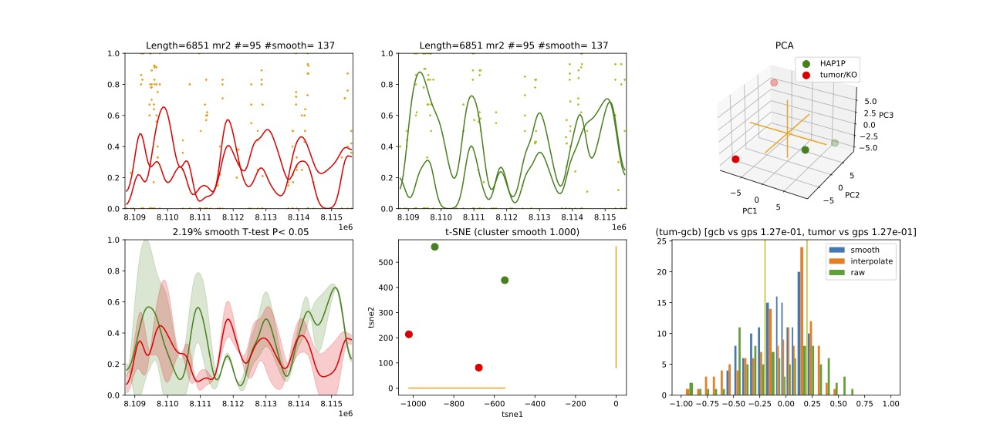

demo2
HAP: ___
This script is a Bash script that calls the dmr_analysis program to predict differentially methylated regions (DMRs) and methylated regions (MRs) from whole-genome bisulfite sequencing (WGBS) data for HAP Cells.
Run Demo2:
Demo2 can be run by executing the bash script given with the pacakge. In this demo DNA methylation Regions are found and ranked.
sbatch job_dmr
While job_dmr is run in a cluster computer (SAGA) provided by Norwegian Research Infrastructure Services(NRIS). Remember to change this according to your machine. job_dmr looks like this
#!/bin/bash
#SBATCH --job-name=demo2-dmr
#SBATCH --time=5:00:00
#SBATCH --mem-per-cpu=15G --partition=bigmem
# Number of cores:
#SBATCH --cpus-per-task=15
#set up job environment
#source /etc/profile.d/modules.csh
#source /cluster/bin/jobsetup
#module use --append /cluster/etc/modulefiles
#module load java/jdk1.7.0_80
#module unload Java/1.8.0_212
#module purge
#module --ignore-cache load Java/1.7.0_80
module load BEDTools/2.27.1-foss-2018b
./demo2_hap1_cell.sh
Here this job calls a shell script file demo2_hap1_cell.sh. This script is prepared by calling different modules of the dmr analysis. The demo assumes that the input data is already prepared in bed format, organized in chromosome named folders, and that the genome size file and refFlat files are available in a separate folder. Some initial parameter setting is done in the start of the script file as follows:
In folder path: final_demo_data/hap1_cell/in_data/WGBS-data/
Out folder path: final_demo_data/hap1_cell/out_data/DMR_CpG_context/
#!/bin/bash
#!/bin/bash
#use bash script to call dmr_analysis
#Please note variable under "#-- " have to be manually adjusted in different run or in different input data!
#path of input data folder
#here, we assume all WGBS methylation profiles are already prepared in bed format at chromosome named folders under in_wgbs_folder,
#-- where file names indicate the sample name and conditions
in_wgbs_folder='../../final_demo_data/hap1_cell/in_data/WGBS-data/'
#path of input reference genome folder
#-- where genome size file and refFlat files will be used in making predefined genomic regions (e.g., TSS, TES, gene et al.) by using dmr_gene_annotation
in_genome_folder='../../final_demo_data/genome/hg38/'
in_genome_refFlat='hg38.refFlat.txt'
in_genome_size='hg38.chrom.sizes.clear.sorted'
replace='_clean_sorted.bed'
finds='.txt'
in_sorted_refFlat=${in_genome_refFlat//$finds/$replace}
#path of input chromatin segment folder
#such as combined chromatin segment from six human cell lines generated from Encode project https://genome.ucsc.edu/cgi-bin/hgFileUi?db=hg19&g=wgEncodeAwgSegmentation
#-- where each predicted chromatin type (e.g., TSS, Enhancers) is listed in a bed formated file and the file name indicate the predicted chromatin type.
in_chromSegment_folder='../../final_demo_data/chromSegment/hg38/'
#output data folder
#path to output folders
#-- where predicted DMR/MRs will be exported
out_result_folder='../../final_demo_data/hap1_cell/out_data/DMR_CpG_context'
#-- Name of output folders and files that will be created in out_result_folder
out_folder4genome_map='out_map2genome'
logProb_cutoff=0.7
out_file4genome_map='wild_vs_ko_DMR_hyper_hypo_mix_0.7.csv'
out_folder4chromSegment_map='out_map2chromSegment'
out_file4chromSeg_map='wild_vs_ko_DMR_hyper_hypo_mix_in_chromSeg_0.7.csv'
#a file name that contains all ranked DMRs by combining results from all chromosomes
mr_IN_FILE='3_chroms_all_mr_data_range_dmrRanking'
In folder path: final_demo_data/hap1_cell/in_data/WGBS-data/
WGBS methylation profiles (input) in bed format looks like the following. Path: final_demo_data/fl_12samples/in_data/WGBS-data/chr18/
chr3 8101576 8101576 0.30 10 -
chr3 8101629 8101629 0.40 10 +
chr3 8101630 8101630 0.73 11 -
chr3 8101677 8101677 0.88 8 +
chr3 8101678 8101678 0.29 7 -
chr3 8102774 8102774 0.50 16 +
chr3 8102775 8102775 0.60 5 -
chr3 8102842 8102842 0.94 17 +
chr3 8103610 8103610 0.67 6 -
Step 1: DMR Prediction
In the first step, the DMRs are predicted and then predicted DMRs and MRs are then exported to the output data folder, and the results from all chromosomes are combined and ranked. - In part a, the dmr_analysis_block module is used to predict DMRs in chr18 and chrY. - They are combined using the dmr_combine_multChrs4rank script to combine and rank the DMRs across multiple chromosomes.
#STEP 1. run dmr_analysis to predict DMRs
#a) do dmr_analysis in blocks
for in_chrom in chr3 chr9 chr13
do
dmr_analysis dmr_analysis_block --in_file_folder $in_wgbs_folder \
--chromosome $in_chrom --group_key $in_chrom \
--out_file_folder $out_result_folder \
--wildType_fileString HAP1_P \
--data_start_position 3 --data_end_position 7 \
--maximum_adjacency_length 1000 --minimum_block_size 5 \
--P_cutoff 0.05 --minimum_percentage_changes 0.0001 \
--percentage_cutoff 0.05,0.1,0.2 --low_median_high_cutoff 2 \
--number_of_processes 15 \
--is_smoothed_data 2 --is_moderate_ttest 0 --is_export_data 1 \
--column_splitBy_dotOrUnderscore 0
done
echo "dmr_analysis_block - Done"
#b) combine results from multiple chromosomes and rank the DMRs
dmr_analysis dmr_combine_multChrs4rank \
--in_chroms_number chr3,chr9,chr13 \
--in_file_fold $out_result_folder \
--in_is_smoothed_data 2 \
--in_LogReg_proba 0.7 \
--in_low_median_high_cutoff high \
--in_file_ending_string _range.tsv
echo dmr_combine_multChrs4rank - Done
Step 2: Plot and Export DMRs
In the second step, the script plots using dmr_selected4plot and exports data for selected DMRs using the module dmr_exportData. The code and parameter setting can be seen as follows:
In part a, the dmr_selected4plot module is used to select DMRs for plotting.
In part b, output data and results are then exported using the dmr_exportData module. Here only chromosome 18 is selected for demo purposes.
#STEP 2. Plot and export data
chrom='chr3'
#-- please note the name of in_DMR_file may be changed in different run because of the parameters, the total number of input and the top percentage et al
#in_DMR_file=${chrom}'_maxDist_1000_minSize_5_DMR_clusterAccuracy_gt_0.5_miniMethyChange_gt_0.05_0.1_0.2_high_miniPercentChange_gt_0.0001_Pcutoff_0.05_isSmooth_2_isModTest_0_576_range_dmrRanking_top_0.97_minLogReg_proba_0.7'
in_DMR_file=${chrom}'_all_mr_data_range_dmrRanking.tsv'
in_data_file=${chrom}'_MR_data4maxBlockDistance_1000_minBlockSize_5_data.txt.gz'
in_wildType_string='HAP1_P'
#some additional features for plotting and exporting data
#select DMR for ploting such as mr1,mr2,mr3 from selected chromosome
#here --in_DMR_file is exported by dmr_combine_multChrs4rank at folder "out_result_folder"/chrY/plots
##--in_data_file is exported by dmr_analysis_block at folder "out_result_folder"/chrY
dmr_analysis dmr_selected4plot --in_DMR_file ${in_DMR_file} \
--in_data_file ${in_data_file} \
--in_data_folder ${out_result_folder}/${chrom}/ \
--column_splitBy_dotOrUnderscore 0 --is_plot 1 --is_export 1 \
--needs_check_mr mr1,mr2,mr3 --wildType_fileString ${in_wildType_string} \
--out_folder ${out_result_folder}/out_selected4plot
echo plot selected MR - Done
#export selected DMR based on bed format file 0
##--input_file contains all MRs in bed foramt that need to extract their raw and smoothed methylation data
dmr_analysis dmr_exportData \
--input_mr_data_folder ${out_result_folder} \
--output_file_folder ${out_result_folder}/test_mr_out \
--input_file_format 0 \
--column_splitBy_dotOrUnderscore 0 \
--wildType_fileString ${in_wildType_string} --input_file test_mr.bed
echo export selected MR - Done
### Step 3: DMR mapping:
In the third step, it maps the predicted DMRs and MRs to predefined genomic regions using dmr_analysis. This demo also includes several parameters that can be manually adjusted , such as the path of the input and output data folders, the name of output folders and files, and the selected DMRs for plotting.
In part a, genomic regions are generated using the dmr_analysis module dmr_gene_annotation.
In part b, DMRs are mapped into genomic regions defined in part a.
Part c performs percentage calculations of DMRs in annotated genomic regions.
These percentages from part c are plotted in the last step d..
#STEP 3. mapp predicted DMR/MRs to predefined genomic regions (e.g., TSS, TES, 5dist etl al) or predicted chromatin segments for further analysis
#below is a result file generated from dmr_combine_multChrs4rank, where DMR/MRs from multiple chromosomes are combined and ranked them by logisitic regression model
#-- Please note this file name needs to be input manually because it is generated after running "dmr_combine_multChrs4rank" and expored at "out_result_folder"
#mr_IN_FILE='3_chroms_high_miniPercentChange_gt_0.0001_Pcutoff_0.05_isSmooth_2_isModTest_0__range_dmrRanking_top_0.97_minLogReg_proba_0.7'
#a) generate predefined genomic regions (e.g., TSS, TES, gene et al.) by dmr_analysis (Used for gene annotation, Omer 27, April, 23)
#Here, to edit exported "list_region_files.txt" for adding/removing predefined genomic regions
#For example, to add file path for enhancer reginos in "list_region_files.txt" if user want to include enhancer in the analysis
dmr_analysis dmr_gene_annotation -F ${out_result_folder} -i no -l 10 \
-xL 50000000 -X 5000 -Y 1000 -M 5000 -N 1000000 -hu yes -n no \
-r ${in_genome_folder}/${in_genome_refFlat} \
-g ${in_genome_folder}/${in_genome_size}
echo export genome annotation files at: ${out_result_folder}/data
echo gene_annotation-Done
#b) map DMR to predefined genomic regions such as TSS, TES, gene et al.
dmr_analysis dmr_map2genome --in_sortedDMR_file ${out_result_folder}/${mr_IN_FILE}.bed \
--in_geneRegion_file ${out_result_folder}/list_region_files.txt \
--in_outFile_folder ${out_result_folder}/${out_folder4genome_map} \
--in_refFlat_file ${out_result_folder}/data/${in_sorted_refFlat}
echo dmr_map2genome - Done
#c) calculate percentage of DMR in annotated genomic regions
dmr_analysis dmr_cal2genome_percent --in_outFile_folder ${out_result_folder}/${out_folder4genome_map} \
--in_outFile_name ${out_file4genome_map} --in_LogReg_proba ${logProb_cutoff} \
--in_fileName_string $mr_IN_FILE
echo dmr_cal2genome_percent - Done
#d) plot percentage of DMR in annotated genomic regions
dmr_analysis dmr_percent2plot --in_countFile_folder ${out_result_folder}/${out_folder4genome_map} \
--in_countFile_name ${out_file4genome_map}
echo dmr_percent2plot - Done
#e) map DMR to predicated chromatin states such as predicated chromatin segment from 6 human cell lines.
dmr_analysis dmr_map2chromSegment --in_chromatinSegment_file_folder ${in_chromSegment_folder} \
--in_fileName_string 'combined_six*bed.gz' --in_combined_chromatinSegment_exist 1 \
--in_outFile_folder ${out_result_folder}/${out_folder4chromSegment_map} \
--in_DMR_file ${out_result_folder}/${mr_IN_FILE}.bed
echo dmr_map2chromSegment - Done
#f) calculate percentage of DMRs in predicted chromatin states.
dmr_analysis dmr_cal2chromSegment_percent --in_outFile_folder ${out_result_folder}/${out_folder4chromSegment_map} \
--in_outFile_name ${out_file4chromSeg_map} \
--in_fileName_string ${mr_IN_FILE}_combined_six_cells_chromatin_segment_min10
echo dmr_cal2chromSegment_percent - Done
#g) plot percentage DMR in chromSegment
dmr_analysis dmr_percent2plot --in_countFile_folder ${out_result_folder}/${out_folder4chromSegment_map} \
--in_countFile_name ${out_file4chromSeg_map}
echo dmr_percent2plot - Done
#h) Combine annotated results from both genome and chromatin segment
#please note both genome and chromatin segment have to be available before running this function.
#This function is slow and not recommend to use for large data but use dds_analysis instead.
dmr_analysis dmr_combine2geneAnnot --number_of_processes 10 --miniLogReg_proba_cutoff 0.7 \
--sortedDMR_file ${mr_IN_FILE}.bed \
--dmr_outFile_folder ${out_result_folder}/ \
--dmr_genomeFile_folder ${out_folder4genome_map} \
--dmr_chromSegmentFile_folder ${out_folder4chromSegment_map} \
--dmr_genomeFile_string '3_chroms_*' \
--dmr_chromSegmentFile_string '3_chroms_*'
echo dmr_combine2geneAnnot - Done
Output:
Output produced can be found under the folder: final_demo_data/hap1_cell/out_data/DMR_CpG_context/
A log file is maintained to track the progress and steps of pipeline.
Wed, 19 Apr 2023 16:24:17 INFO File load ['../../final_demo_data/hap1_cell/out_data/DMR_CpG_context/chr3/chr3_MR_data4maxBlockDistance_1000_minBlockSize_5_data.txt.gz']
Wed, 19 Apr 2023 16:24:18 INFO Blocks with distance greater than 1000
Wed, 19 Apr 2023 16:24:18 INFO and minimum data points in block 5
Wed, 19 Apr 2023 16:24:18 INFO block size 576
Wed, 19 Apr 2023 16:24:18 INFO Export data in ../../final_demo_data/hap1_cell/out_data/DMR_CpG_context/chr3_MR_data4maxBlockDistance_1000_minBlockSize_5_data.txt
Wed, 19 Apr 2023 16:24:18 INFO minimum MR length 44
Wed, 19 Apr 2023 16:24:18 INFO maximum MR length 284216
Wed, 19 Apr 2023 16:24:18 INFO Maximum length of adjancey CpG sites in a block 1000
Wed, 19 Apr 2023 16:24:18 INFO Hist plot n [ 3 33 47 231 82 142 24 14]
Wed, 19 Apr 2023 16:24:18 INFO bins [ 44 100 500 1000 5000 10000 50000 100000 284316]
Wed, 19 Apr 2023 16:24:18 INFO mininum MR data size 5
Wed, 19 Apr 2023 16:24:18 INFO maximum MR data size 7535
Wed, 19 Apr 2023 16:24:18 INFO Wild type /control sample file name is HAP1_P
Wed, 19 Apr 2023 16:24:18 INFO Wild/control sample 2 ,
Wed, 19 Apr 2023 16:24:18 INFO Tumor/KO sample 2 ,
Wed, 19 Apr 2023 16:24:18 INFO DMR export path ../../final_demo_data/hap1_cell/out_data/DMR_CpG_context/chr3/plots
Wed, 19 Apr 2023 16:24:18 INFO DMR export MR data path ../../final_demo_data/hap1_cell/out_data/DMR_CpG_context/chr3/data
Wed, 19 Apr 2023 16:24:18 INFO Do parallel calculation by using 15 processes
Wed, 19 Apr 2023 16:27:43 INFO Export all position results at : ../../final_demo_data/hap1_cell/out_data/DMR_CpG_context/chr3/plots/chr3_all_mr_data.tsv
Wed, 19 Apr 2023 16:27:43 INFO Export range position results at : ../../final_demo_data/hap1_cell/out_data/DMR_CpG_context/chr3/plots/chr3_all_mr_data_range.tsv
The output file contain information about DMR and are ranked. Each row shows one region with the pvalue of smoothed and interpolated data, percentages and many other values calculated in the pipeline. Here is how an output file look like:
mr_id T-test_pval_smoothed_data T-test_pval_interpolated_data percent_data_passed_ttest gcb_vs_grpsDist_pval tumor_vs_grpsDist_pval gcb_vs_grpsDist_tval tumor_vs_grpsDist_tval cluster_accuracy low_negative_tumor_vs_gcb_percent median_negative_tumor_vs_gcb_percent high_negative_tumor_vs_gcb_percent low_positive_tumor_vs_gcb_percent median_positive_tumor_vs_gcb_percent high_positive_tumor_vs_gcb_percent is_DMR position DMR_type chroms log10_gcb_vs_grpsDist_pval log10_tumor_vs_grpsDist_pval log10_gcb_vs_grpsDist_pval_minMaxNorm log10_tumor_vs_grpsDist_pval_minMaxNorm dmr_weight_score percent_data_passed_ttest_gt_pvallogReg_score logReg_predicted_dmr
mr0 0.78693 0.994458 0.0 0.913787 0.913787 0.108263 0.108263 0.5 0.0 0.0 0.0 0.0 0.0 0.0 U chr3,8101575-8101678,6 mix chr3 0.039154968074749066 0.039154968074749066 0.005499076738065728 0.005499076738065728 0.06175970455618103 0.0 -6.006634647005305 0.0024563126376758036
mr310 0.823454 0.96343 0.0 0.190969 0.190969 1.30772 1.30772 0.5 0.741935 0.0 0.0 0.0645161 0.0 0.0 U chr3,13714536-13714846,5 mix chr3 0.7190368549579803 0.7190368549579803 0.10371096336127526 0.10371096336127526 0.0931875082756081 0.0 -5.56693922210052 0.003807608041856897
mr70 0.0331731 0.852834 0.0 0.359298 0.359298 0.916704 0.916704 0.5 0.166667 0.104167 0.0 0.0833333 0.0 0.0 U chr3,8666424-8678426,299 mix chr3 0.44454505615790274 0.44454505615790274 0.06405943278978334 0.06405943278978334 0.08049901849273067 0.0 -5.463230316370396 0.004221937254744937
mr498 0.146273 0.769511 0.0 0.316448 0.316448 -1.00178 -1.00178 0.5 0.327273 0.163636 0.0 0.0 0.0 0.0 U chr3,16059215-16073082,142 mix chr3 0.4996974811853724 0.4996974811853724 0.07202643973362799 0.07202643973362799 0.08304846071476095 0.0 -5.267008086625192 0.005132543943399981
mr89 0.261107 0.383387 0.0 0.38618 0.38618 0.866566 0.866566 0.5 0.367347 0.22449 0.0 0.102041 0.0 0.0 U chr3,9262308-9274593,115 mix chr3 0.4132100877289246 0.4132100877289246 0.05953296072741288 0.05953296072741288 0.07905054743277212 0.0 -5.158648410304675 0.005716597972610158
Top two rows of all results file looks like following. It gives information about methylated region, its relative chromosome number, logistic regression probablity and genome information.
mr_chrs mr_start_pos mr_end_pos mr_info mr_logReg_proba genome_info chromSegment_info
chr3 8102773 8107735 chr3:mr1:mix:D 0.987977 chr3:7501658:8496658:NR_033378||5distD:5000:1000000||LMCD1AS1:-:8221146:8501658~chr3:7644798:8639798:NM_001256748||5distD:5000:1000000||SSUH2:-:8619402:8644798~chr3:7652084:8647084:NM_015931||5distD:5000:1000000||SSUH2:-:8619402:8652084~chr3:7769614:8764614:NM_000916||5distD:5000:1000000||OXTR:-:875040:8769614~chr3:7769232:8764232:NM_001354655||5distD:5000:1000000||OXTR:-:8750408:8769232~chr3:7768731:8763731:NM_001354656||5distD:5000:1000000||OXTR:-:8750408:8768731~chr3:7963472:8958472:NM_020165||5distD:5000:1000000||RAD18:-:8877074:8963472~chr3:8021307:8216146||intergenic:5000:1000~chr3:7540284:8535284:NR_046606||5dist:5000:1000000||GRM7AS1:-:7519740:7535284~chr3:8021307:9016307:NR_110131||5dist:5000:1000000||LOC101927394:-:7952804:8016307~chr3:7501806:8496806:NM_001278234||5dist:5000:1000000||LMCD1:+:8501806:8568125~chr3:7501822:8496822:NM_001278233&NM_001278235||5dist:5000:1000000||LMCD1:+:8501822:8574668&8551274~chr3:7571781:8566781:NR_024065||5dist:5000:1000000||LINC00312:+:8571781:8574668~chr3:7733801:8728801:NM_001234||5dist:5000:1000000||CAV3:+:8733801:8746758 R~T
chr3 8108750 8115603 chr3:mr2:mix:D 0.981631 chr3:7501658:8496658:NR_033378||5distD:5000:1000000||LMCD1AS1:-:8221146:8501658~chr3:7644798:8639798:NM_001256748||5distD:5000:1000000||SSUH2:-:86194028644798~chr3:7652084:8647084:NM_015931||5distD:5000:1000000||SSUH2:-:8619402:8652084~chr3:7769614:8764614:NM_000916||5distD:5000:1000000||OXTR:-:8750408:8769614~chr3:7769232:8764232:NM_001354655||5distD:5000:1000000||OXTR:-:8750408:8769232~chr3:7768731:8763731:NM_001354656||5distD:5000:1000000||OXTR:-:8750408:8768731~chr3:7963472:8958472:NM_020165||5distD:5000:1000000||RAD18:-:8877074:8963472~chr3:8021307:8216146||intergenic:5000:1000~chr3:7540284:853584:NR_046606||5dist:5000:1000000||GRM7AS1:-:7519740:7535284~chr3:8021307:9016307:NR_110131||5dist:5000:1000000||LOC101927394:-:7952804:8016307~chr3:7501806:8496806:NM_001278234||5dist:5000:1000000||LMCD1:+:8501806:8568125~chr3:7501822:8496822:NM_001278233&NM_001278235||5dist:5000:1000000||LMCD1:+:8501822:8574668&8551274~chr3:7571781:8566781:NR_024065||5dist:5000:1000000||LINC00312:+:8571781:8574668~chr3:7733801:8728801:NM_001234||5dist:5000:1000000||CAV3:+:8733801:8746758 PF~R~CTCF~T~E~WE
From above two mrs, here we will visualize methylation region 2 of chromosome 3.
